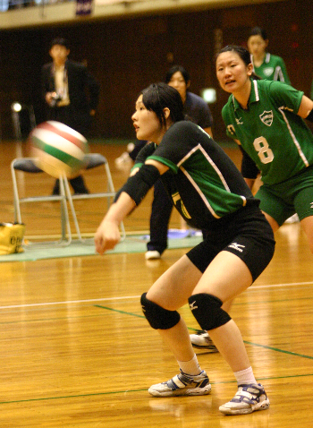
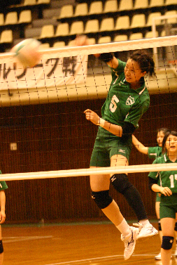
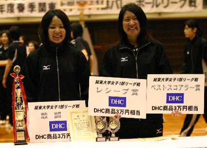
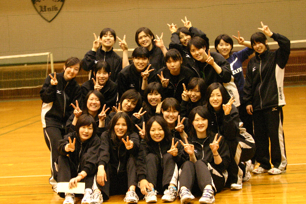

関東大学１部春季リーグ 於 青学大記念館
◆スターティングメンバー◆
１ セッター 土田望未(史学４年)主将
３ ライト 天野里美(国際政経４年)副将
４ センター 米川侑希(史学３年)
５ センター 浦澤奈美(国際政経３年)
７ リベロ 千葉智枝美(経済３年)
８ ライト 江森圭美(経営３年)
12 レフト 青木友美(史学２年)
昨日の筑波大戦は青学大の関東大学春季リーグ５連覇をかけた重要な試合だった。最近の大会では、筑波大という大きな壁を破れていない。何としてで も勝って雪辱を晴らすことを目標に、この試合に挑んだ。
第１セット、相手のペースに持ち込まれてなかなか主導権を握れない。筑波大を追いかけるが、ポイントの差は埋まらず18‐25でセットを落とし
た。続く第２セット、流れは一気に変わり青学大の攻撃が機能する。江森のスパイクが流れるように決まり相手からポイントを引き話す。このまま25－15で
セットを終え、青学らしさを見せつけた。
しかし弟３セット、第４セットと攻撃の歯車がかみ合わない。ブロックも機能せず、選手たちの表情に焦りが見えた。リズムを作れないまま筑波大の勢いを止
められず、青学大は今リーグ初の敗戦を経験した。
今日の東女戦では、昨日の敗戦からの切り替えがポイントだった。第１セット、ポイントを取っては取られる試合展開の中で江森、浦澤の鋭いアッタク
や相手のスキを突くプレーが功を奏し25－22でセットを取った。
第２、第３セットは完全に青学ペース。矢野千昌(家政２年)を投入したことでチームの調子が上がった。矢野の安定したサーブやサーブカットもあり、東女
とのポイント差を広げる。選手たちに気持ちの余裕が生まれたことで、ライト天野副将も連続してスパイクが決まった。終盤の東女の追い上げにも動じず青学大
は確実にポイントを重ね、リーグ最終戦を勝利で飾った。

青学大・筑波大・嘉悦大ともに６勝１敗。セット率で嘉悦大が優勝となったが、優勝大学から白星を奪ったのが青学大だけだった。次回の関東インカレで、こ
の３大学がどのような戦いを見せるのか目が離せない。(香)
◆昨日の結果◆
青学大●１－３○筑波大
(18‐25)
(25‐15)
(20‐25)
(18‐25)
◆今日の結果◆
青学大○３－０●東女大
(25‐22)
(25‐11)
(25‐16)
◆個人賞◆
ベストスコアラー賞・レシーブ賞 江森圭美
敢闘賞 土田望未

生瀬良造監督コメント
「今日の試合は矢野が良い流れを作ってくれた。昨日の筑波戦もこのメンバーならいけたかもしれない。秋に向けて、慎重が低い分ブロックでボールを止めるこ
とだけではなくレシーバーがボールを取りやすいブロックの仕方を練習したい」
土田主将コメント
「今日勝てたのはサーブが走っていたから。２セット目からリズムを掴めてよかった。自分が焦りを見せると、他の部員にも不安を与えてしまうから焦らずプ
レーしたい。今回は後輩に助けられた。小さいチームだからキャッチ、レシーブをしっかり練習して、東日本インカレに挑みたい。」
天野副将コメント
「昨日の筑波戦はキャッチ・サーブカットが悪かった。今日はサーブで攻めることができて良かったと思う。サーブ、サーブキャッチ、フォロー面を強化した
い。東日本インカレではレフトでも打てるように練習する」
江森コメント
「今日は速い攻撃やサーブで相手を崩せて良かった。慎重をカバーするには速攻を極めるしかない。全日本の高橋さんと竹下さんのようなプレーをやってみた
い。今回のリーグを通してレフトエースとしての自覚が出てきた」
千葉コメント
「筑波戦は一方的にやられてしまった。もう一回やりたい。声でチームを引っ張っていけるようにしたい。ゲームの１点目の入り方や試合の入り方が甘い。東日
本インカレではディフェンス面を向上させてポイントをあげることが目標」
